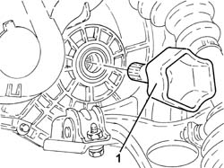
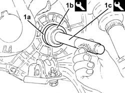

2110D65 LEFT DIFFERENTIAL SHAFT OIL SEAL - R.R. WITH DRIVESHAFT REMOVED
- Path
- Procedures > 21 GEARBOX > 2110 MANUAL GEARBOX AND DIFFERENTIAL > 2110D manual gearbox differential > 2110D65 LEFT DIFFERENTIAL SHAFT OIL SEAL - R.R. WITH DRIVESHAFT REMOVED
- Kind
- repair procedure (removal / refitting; the operation number is the code)
- Applies to
- engines: 2.4 JTD 20v; all production periods
- Interactive page
- https://sloeber94.github.io/elrnDB-a156/en/#/3238014
Applies to: engines: 2.4 JTD 20v; all production periods
 Removing
Removing
 Refitting
Refitting1. Using a suitable tool, remove the differential left internal driveshaft.

Applies to: engines: 2.4 JTD 20v; all production periods
Remove the left differential shaft oil seal from the flange.
Applies to: engines: 2.4 JTD 20v; all production periods
Refitting
Removing1. Fit a new left differential shaft oil seal (1a) using the tools (1b) and (1c).
 | Name | Country |
|---|---|---|
1b | Fitting tool | 1.870.899.800 |
| Name | Country |
|---|---|---|
1c | Grip | 1.821.171.000 |

Applies to: engines: 2.4 JTD 20v; all production periods
Place the left differential internal driveshaft back in its housing.